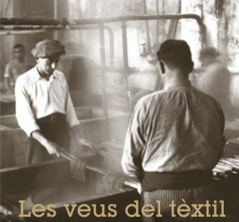
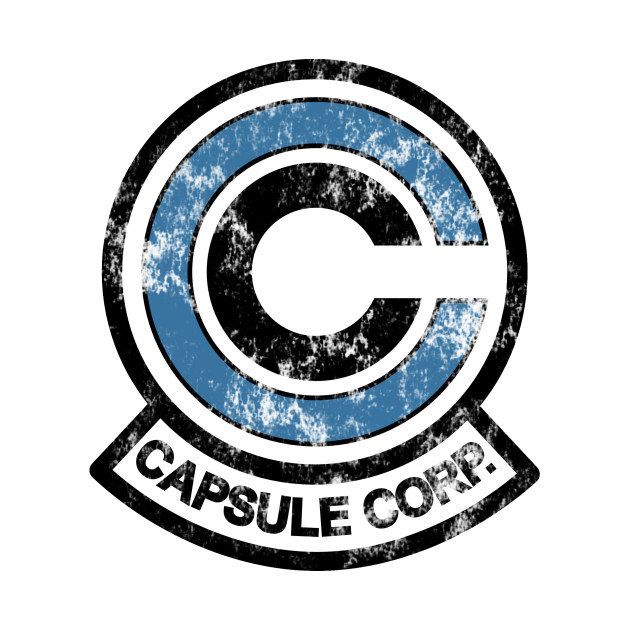
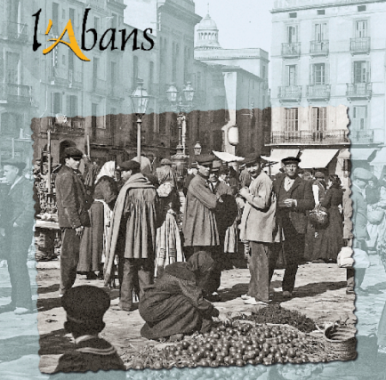

Les veus del tèxtil (Las voces del textil)
"Les veus del textil" es un proyecto del Gremi de Fabricants, Ajuntament de Sabadell y Fundació Bosch i Cardellach que se centraba en recojer y salvaguardar la memoria del pasado textil de la ciudad.
2012

Capsule Corp, ERP
Proyecto final del bootcamp de programación web.
2020

L'Abans Sabadell, 1864-1968
This is a longer card with supporting text below as a natural lead-in to additional content. This content is a little bit longer.
2018
Oriol Canadés, Web Personal
Proyecto para la creación de una página web personal.
2020
Alfred, Aplicación Web
Alfred es un proyecto de aplicación web diseñado para tener un mayor control sobre las finanzas personales.
2020

Card title 4
This is a longer card with supporting text below as a natural lead-in to additional content. This content is a little bit longer.
Last updated 3 mins ago